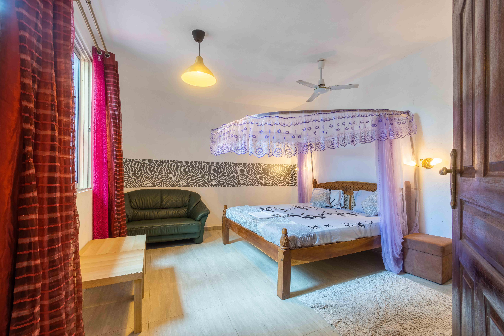
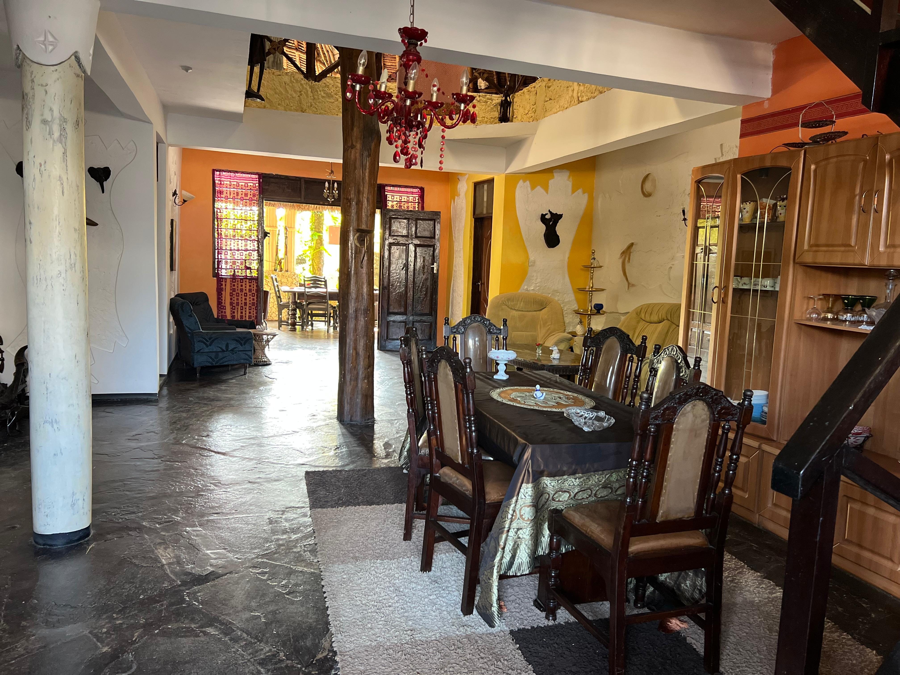
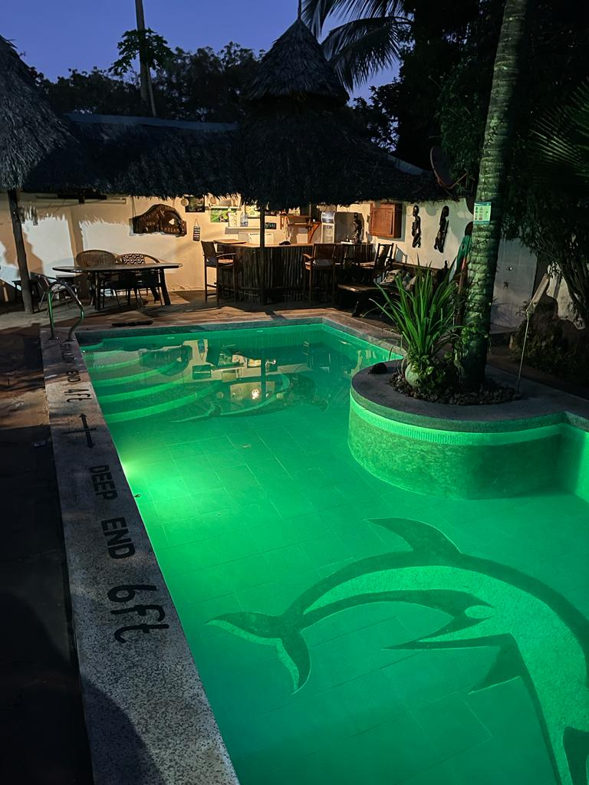
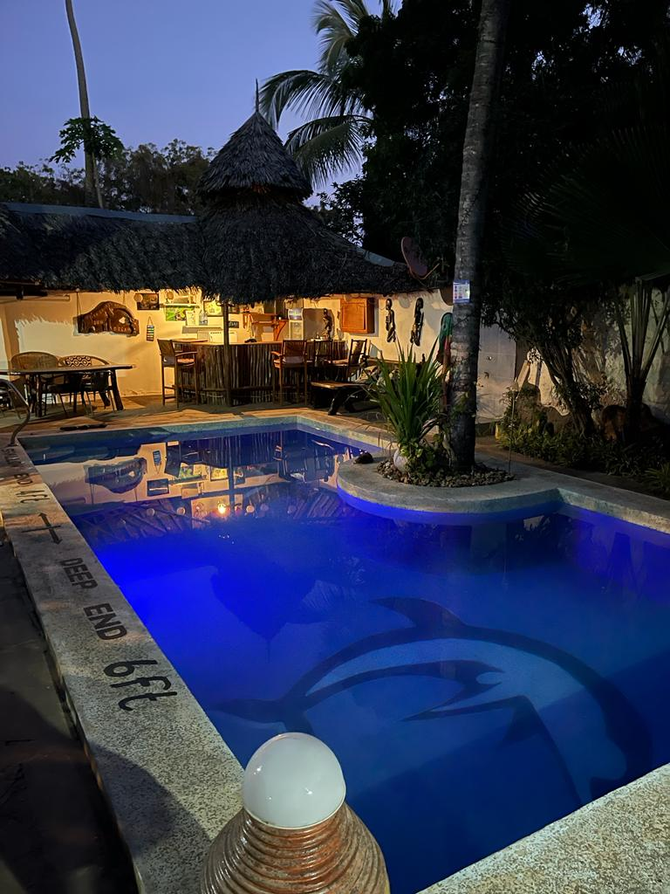
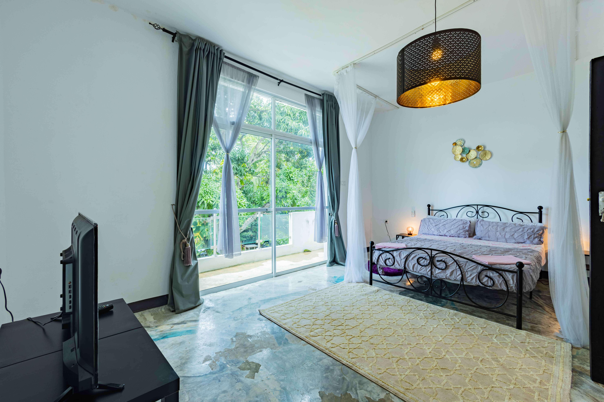

Baraza Eco Lodge
Thatched bandas raised on stilts among the palms, built almost entirely from local, reclaimed material.


Eco lodges, quiet sea cottages and green villas — stays chosen for their quiet, not their brochure.
First Tide · Arrival
The first memory of any trip is arriving. We work with a small set of stays we'd happily send our own families to — places built with the coast in mind, not on top of it.
Low-impact, locally built, and set into the coastal forest rather than cleared for it.
Thatched bandas raised on stilts among the palms, built almost entirely from local, reclaimed material.

Solar-powered and rainwater-fed, with a kitchen that runs almost entirely on produce grown on site.

A handful of open-air bandas facing the water, run by a local family who've kept it small on purpose.
Small, self-contained cottages a short walk from the water — private, simple, and never overbooked.

A single quiet cottage with a private veranda facing the tide line — no shared walls, no shared noise.

Set back in a small tropical garden, a few minutes' walk from the beach path.

Enough room for a small family, with an outdoor kitchen and a hammock strung between two palms.
Larger private villas for families or groups, set in landscaped grounds with the coast just beyond them.

A four-bedroom villa around a shaded pool, staffed by a resident cook and groundskeeper.

Direct beach access and a rooftop terrace built for watching the sun go down over the reef.

The largest of the three, with grounds big enough for a group to spread out and still find quiet.
Ready When You Are
The Five-Day Coast Adventure
One carefully curated journey. Local stays, hidden experiences and meaningful connections — no planning required.
Plan Your Escape